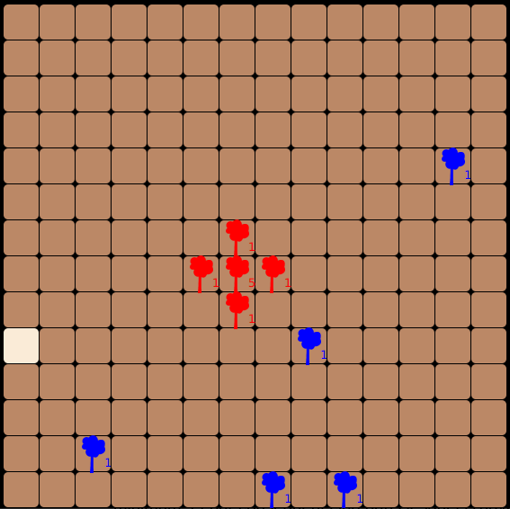

Odomo est un projet informatique consistant à programmer une station météo personnelle qui peut afficher des informations météorologiques
ou encore automatiser un système domotique.
Installation poste
Dans ce projet, le but était de constituer une machine virtuelle avec deux utilisateurs, une administratrice, et un développeur qui peut
utiliser l'éditeur vs code dans le langage go puis de réaliser un rapport détaillé de cette installation.

Projet Biosphere
Dans ce projet divisé en 2 phases, j'ai d'abord dû coder les règles d'un jeu de plateau avec un code en partie fourni puis dans un second temps
coder une IA permettant de faire le maximum de point selon les rêgles imposées.